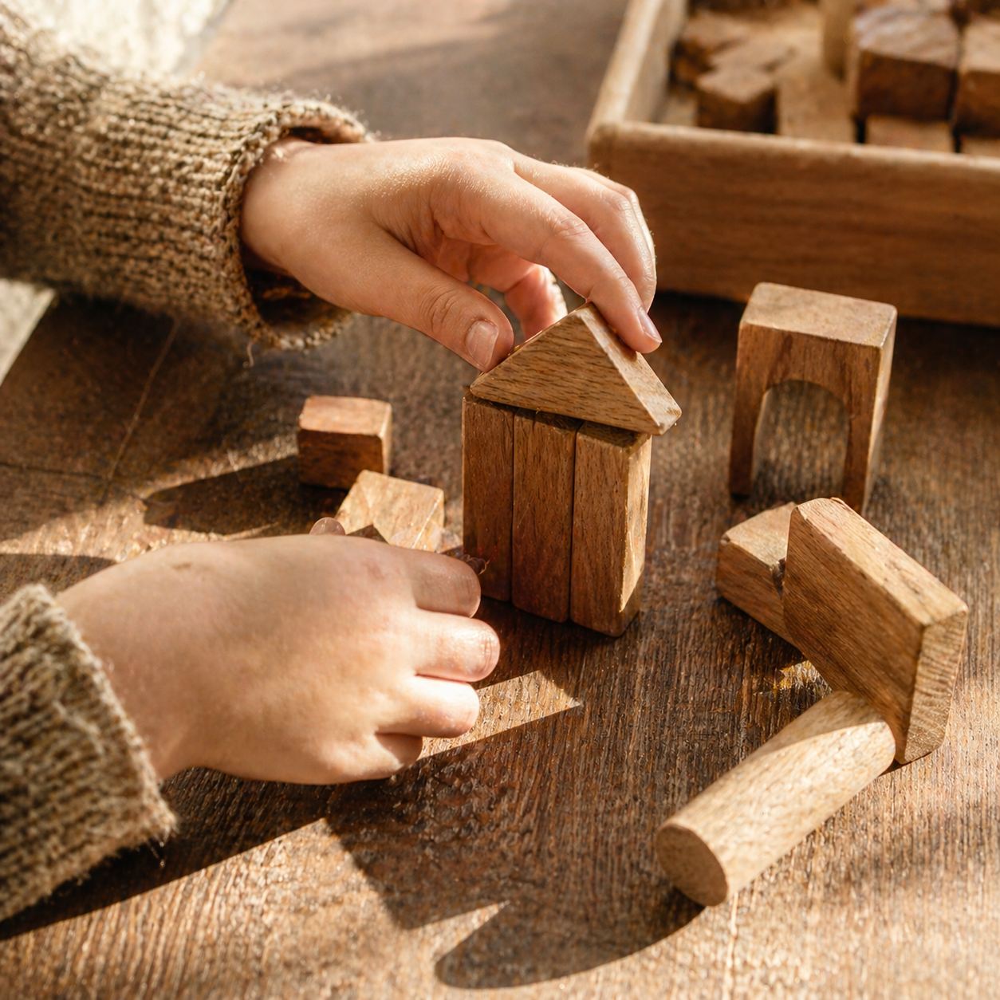
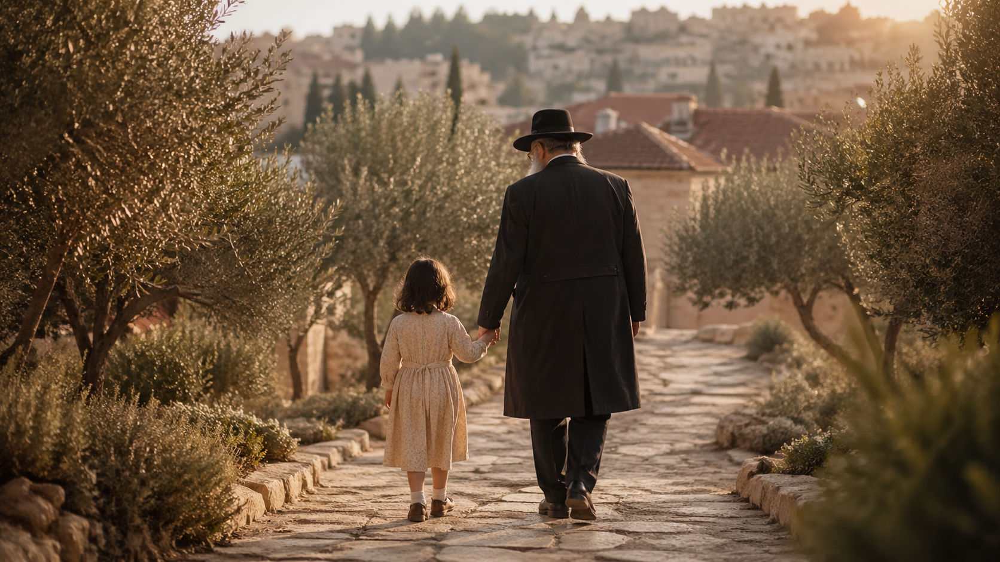
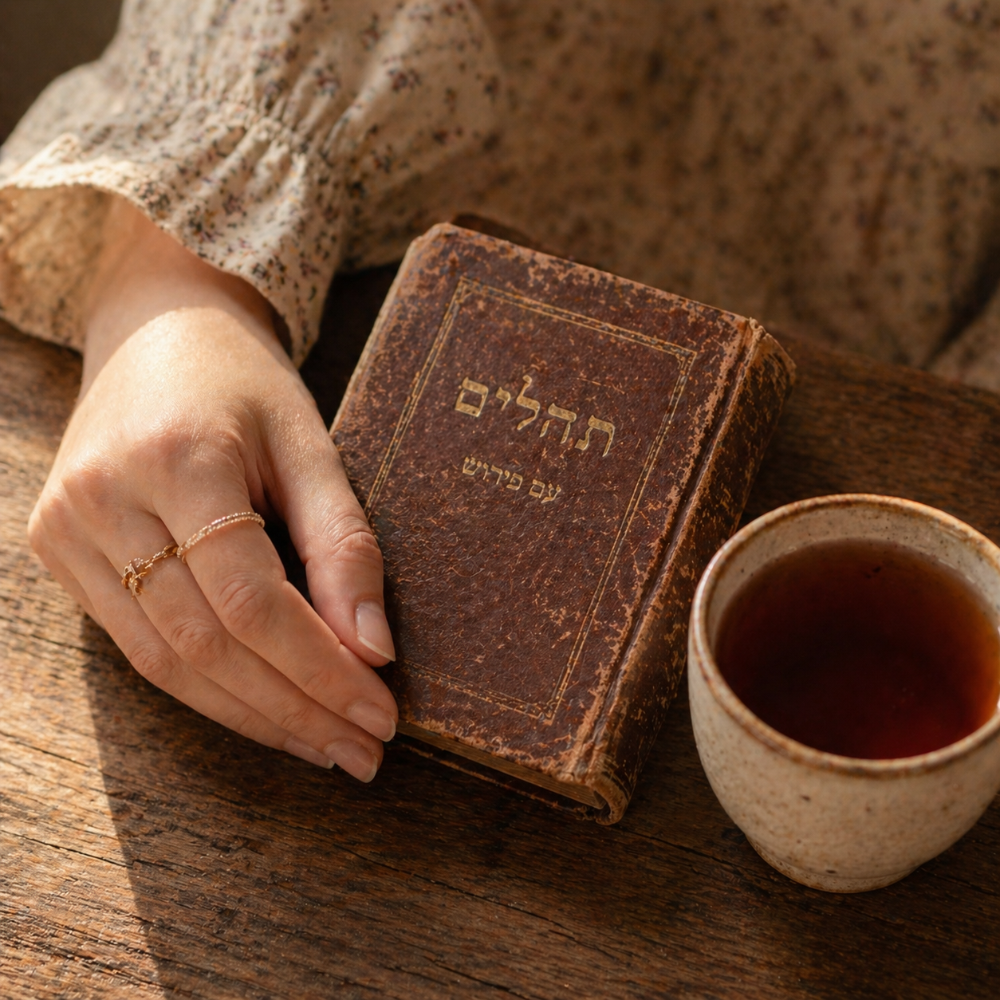
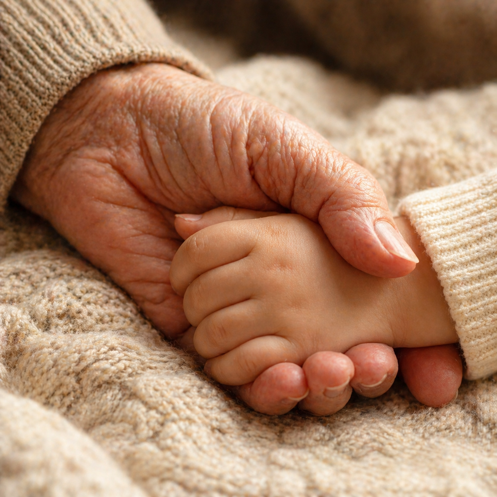
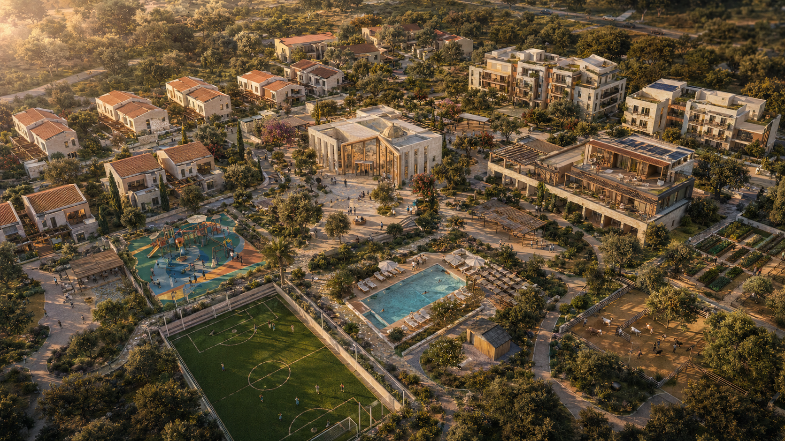
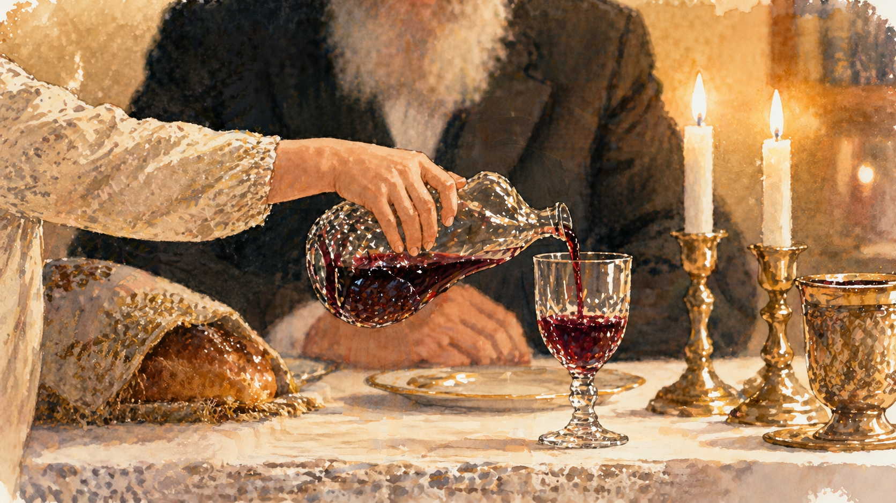
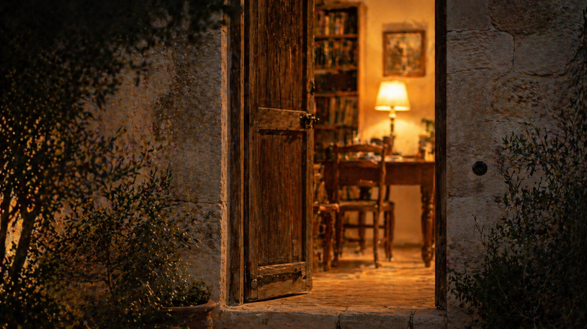

שלב ראשון · ילדים 0–12
מקבלים בית. נותנים שמחה.
מגיעים ממערכת הרווחה. גרים במשפחתון של חמישה־שמונה ילדים בליווי זוג צעיר ש"מאמץ" אותם בשליחות. אווירה ביתית, חיידר או בית יעקב, חוגי אחר הצהריים, ולימוד עם אברך.

בית אברהם — תוכנית להקמת הכפר החרדי הראשון בישראל המחבר ילדי רווחה, נערות צעירות ומבוגרים פעילים בקהילה אחת.
אנחנו בתחילת הדרך — בשלב הזה אנחנו מקימים את ועדת היועצים המקצועית ולומדים ממודלים מוכחים בעולם.
מה זה בית אברהם
בית אברהם הוא הכפר הראשון בישראל שבו ילדים מרווחה, נערות צעירות ומבוגרים פעילים חיים תחת קורת גג אחת. לא שלושה מוסדות זה לצד זה — קהילה אחת שכל מסלול בה תורם לאחר.

שלב ראשון · ילדים 0–12
מגיעים ממערכת הרווחה. גרים במשפחתון של חמישה־שמונה ילדים בליווי זוג צעיר ש"מאמץ" אותם בשליחות. אווירה ביתית, חיידר או בית יעקב, חוגי אחר הצהריים, ולימוד עם אברך.
שלב שני · נוער 13–18
פנימייה לבנים, פנימייה לבנות. הבנים לומדים בישיבה, הבנות בבית יעקב. הכפר נשאר הבית — שבתות, חופשות ואירועים אישיים.

שלב שלישי · נערות 18–22
דירות עצמאיות בכפר. חלק ממשיכות מהפנימייה, חלק מגיעות מבחוץ ב-18. עובדות בכפר, מתחנכות לחיי משפחה בליווי עובדת סוציאלית. רבות חוזרות אחרי החתונה כזוגות צעירים.

שלב רביעי · מבוגרים
מגיעים מהקהילה בדיור מוגן בתשלום. ממשיכים בחיי תורה, סדר לימוד עם אברכים בבוקר, ומלווים את הילדים והנערות סביבם. קהילה פעילה ומלאת חיים.

משפחתונים. פנימייה. דיור מוגן. דירות נערות. בית כנסת מרכזי. גינות, מגרש כדורגל, בריכה, פינת חי, וחוות סוסים. כפר אחד שתוכנן מהיום הראשון לאפשר לשלושה דורות לחיות זה לצד זה ביראת שמים, בכבוד ובחיוּת.
איך הרעיון נולד

בראש השנה האחרון ישבנו אצל חמותי בארוחה. סבא של אשתי, בן 98, ישב לצידנו. הוא גר אצלם כבר שנים. שאלנו אותה איך היא מסתדרת לטווח ארוך, והעלינו את האפשרות להעביר אותו לדיור מוגן.
"הוא ימות שם. כאן הוא רואה את הנכדים והנינים שבאים. שם הוא יהיה לבד."
המשפט הזה לא יצא לי מהראש. חשבתי על קרובות משפחה שגדלו בדירות רווחה. על הילדים שאני פוגש חמש־עשרה שנים בעבודת חסד. על האנשים שאני מטפל בהם במד״א. אנשים מכל גיל מבקשים אותו דבר: בית, אנשים שמכירים אותם, ומקום שאליו אפשר לחזור.
אז למה לא לבנות את כל זה במקום אחד.
מה ייחודי
01
כל הפנימיות וכל בתי האבות בארץ מיועדים לאוכלוסייה אחת. בית אברהם הוא הראשון שבונה קהילה רב־דורית כמודל הליבה.
02
מבוגר שמשלם דיור מוגן מסבסד את הילד שמשרד הרווחה לא מכסה במלואו. נערה שמטפלת בילד לומדת את עצמה. ילד שיושב עם מבוגר נותן לו סיבה לקום בבוקר. מעגל, לא חסד חד־צדדי.
03
מוסד חרדי על כל המשתמע: בית כנסת קבוע, רב, משגיח כשרות, אברכים בסדר לימוד עם המבוגרים בבוקר ועם הילדים אחר הצהריים, הפרדה מגדרית מלאה מגיל שש ומעלה. אופי תורני־ישיבתי, פתוח לקליטת ילדים מכל הזרמים בגיל הרך.
04
אנחנו לא מקימים עוד פנימייה ולא עוד בית אבות. אנחנו מסנתזים מודלים בין־דוריים שכבר הוכיחו את עצמם — Hogeweyk (הולנד), Humanitas (רוטרדם), Bridge Meadows (אורגון) — ובונים את היישום הראשון בעולם המשלב שלוש אוכלוסיות תחת זהות חרדית־ישראלית.

מי מוביל את זה
חמש־עשרה שנה מתנדב בארגוני חסד. ארבע שנים חובש מד״א שיוצא גם מאמצע יום עבודה. מייסד FutureFlow, חברה שבונה מערכות עבור ארגונים חברתיים ועסקיים בישראל.
"הָאָדָם לֹא לְעַצְמוֹ נִבְרָא אֶלָּא לְהוֹעִיל לַאֲחֵרִים." — ר' חיים מוולאז'ין
זה המוטו שלי. בית אברהם הוא הצורה השלמה ביותר שמצאתי לקיים אותו.
למה אני, ולמה זה הפרויקט שלי ←
בואו להיות חלק
בית אברהם בשלב שבו החזון בנוי, ועכשיו דרושים אנשי מקצוע, פותחי דלתות, ושותפי דרך. אם אחד מהבאים מתאר אותך, נשמח לדבר.
דלת ראשונה
מנהלי מוסדות, עובדות סוציאליות, אדריכלים, רואי חשבון, עורכי דין שמכירים עמותות חסד, רופאים גריאטריים, יועצי רגולציה.
בואו נדברדלת שנייה
יועצי פילנתרופיה, רבנים עם נגישות, מנהלי קרנות, פעילים בקהילות חרדיות בארץ ובחו״ל. אם אתם רואים מי צריך לשמוע על בית אברהם, נשמח להיכרות.
לחבר אותנודלת שלישית
תורמים שמחפשים פרויקט עם השפעה מדידה, מורשת, ושותפות אמת. בית אברהם בנוי כך שתורם עוגן יוכל להטביע חותם משמעותי לאורך זמן.
להבין יותר